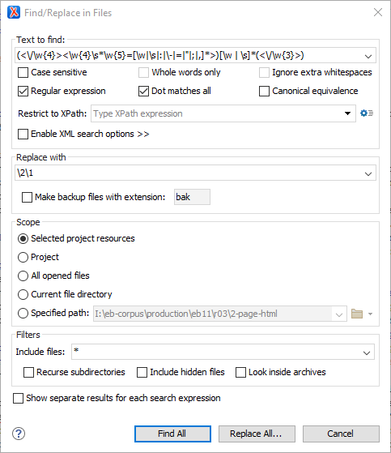
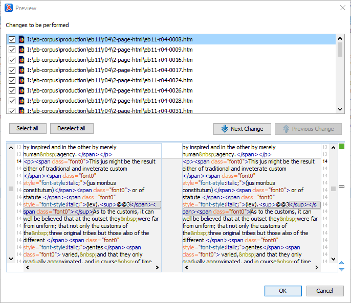

How to validate HTML files in Oxygen. Documents must be
“well-formed” in order to transform them in Oxygen XML Editor using
XSLT. A document that is well-formed has a correct
structure of tags, but it does not check the legitimacy of the tags themselves. A "valid"
file is both well-formed and uses tags correctly, according to the associated DTD.
Well-formed
A Well-formed XML document is a document that
conforms to the XML syntax rules.
Valid
A Valid XML document is a well-formed
XML document that also conforms to the
rules of a schema that defines the legal elements of an XML document.
At this stage, we only need to correct any errors we find to make all files
well-formed. ABBYY FineReader regularly violates rules for
well-formed HTML. Most often, it improperly nests
<sup> and <sub> tags. "Nesting"
means that a tag within another tag must open and close within it and not remain
open when the containing tag closes. In the "Correct" example, the inner
<sup> tag opens and closes within the outer
<font> tag. In the "Incorrect" example, the tags overlap
one other.
Correct:
<font><sup> xyz </sup></font>
Incorrect:
<font><sup> xyz </font></sup>
To correct common nesting errors, we run a batch find-and-replace operation that
reorders the improperly nested tags.
Select the batch of 250 HTML files in
Oxygen's Project
window.
Right-click the selection and open the Find/Replace in Files
… window.
Figure: Find/Replace in Files Window

Copy and paste the following reg-ex as the Text to
find:
Select the Regular expression and Dot matches
all boxes. For Scope, use
Selected project resources.
Select Replace All… and use the
Preview… option to double-check that the regex is
working properly, then click OK.

Repeat this find/replace operation several
times until no more matches are found.
When the batch of files is done, select all files in the html folder,
right-click, and select Validate > Check well-formedness.
All files should be well-formed.
This procedure will correct most nesting errors, but it will
not catch every variation. If any files are not well-formed, you must correct
them manually before proceeding. Oxygen will not
transform files that are not well-formed.